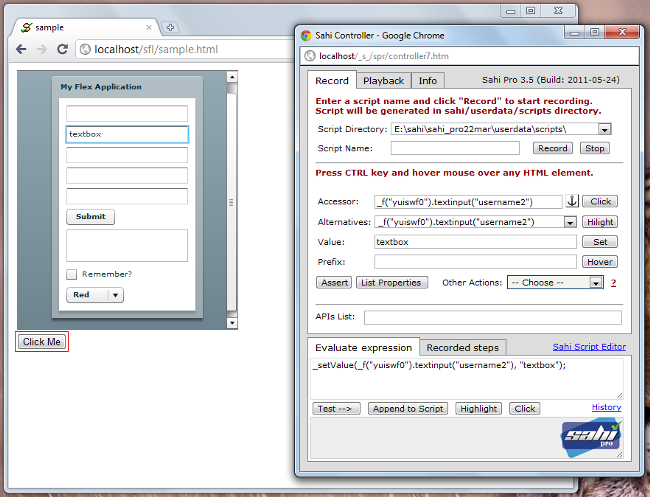

Sahi Pro - Sahi Flex Support
Introduction
Sahi Pro provides support for automation of flex applications via the Sahi Flex Library (SFL).To enable automation, the flex application needs to be compiled with Sahi's swc file.
info
Different swc files are available for different versions of Flex.
Compile your application with the relevant swc file.
If your application is compiled with Flex 4.0, use sfl4.swc
Sahi's swc files are located in
Compile your application with the relevant swc file.
If your application is compiled with Flex 4.0, use sfl4.swc
Sahi's swc files are located in
sahi_pro/sfl/ folderCompile with sfl.swc using command line
You can compile your flex application with sfl using the following command (Change sfl version as needed)mxmlc yourapp.mxml -include-libraries+=sfl4.swc --output=yourapp.swfwarning
After compilation refresh the browser cache, to make sure that the modified app is available.
Compile using Ant
When compiling using Ant, we need to specify the compiler.include-libraries option<mxmlc file="sample.mxml">
... normal options
<compiler.include-libraries dir="D:/sahi/sfl" append="true">
<include name="sfl4.swc" />
</compiler.include-libraries>
</mxmlc>warning
After compilation refresh the browser cache, to make sure that the modified app is available.
More details on flex compilation itself via ant is available here
Compile using Adobe Flash Builder (Add SWC files to Flex Builder projects)
- In Flex Builder, select your Flex project in the Navigator.
- Select Project > Properties. The Properties dialog box appears.
- Select Flex Compiler in the tree to the left. The Flex Compiler properties panel appears.
- In the "Additional compiler arguments" field, enter the following command:
-include-libraries "sfl4.swc"
info
In Flex Builder, the entries in the include-libraries compiler option are relative to the Flex Builder installation directory.
The default location of this directory on Windows 32 bit is
and on Windows 64 bit is
The default location of this directory on Windows 32 bit is
C:\Program Files\Adobe\Flex Builderand on Windows 64 bit is
C:\Program Files(x86)\Adobe\Flex Builderwarning
After compilation refresh the browser cache, to make sure that the modified app is available.
Recording a flex application
 From the dashboard, open any browser and navigate to your flex application.
Press ALT and double click on the document window of the page which you want to record.
Sahi's Controller window will popup. You can now start recording your Flex application.
warning
Ctrl + hover (to get a flex element's accessor) will work only if the Flex application is in focus.
To do this, you will have to first click on the Flex application.
To do this, you will have to first click on the Flex application.
Flex APIs are slightly different from the normal JavaScript APIs.
Example
_f("flex_app_id").textinput("username2")The code above identifies a
mx.controls::TextInput field inside a flex application identified by _f("flex_app_id")Identification of Flex Components
Sahi identifies flex components based on the type (class name) of element and one of its visible/significant attributes.The attributes may be one of
label, text, name, automationName, toolTip, id, autoGeneratedName, indexor some other attribute which is relevant to that element.
mx components are identified as lower case of their class names.
Eg.
mx.controls::TextInput corresponds to API _f("id").textinput("id2")Spark components are identified with an
s_ prefix.Eg.
spark.components::TextArea corresponds to API _f("id").s_textarea("id2")Recognizing Custom Components
Sahi, by default, adds support for most mx and spark components.If your component is not recognized, do the following:
-
CTRL Hover on the element which is a parent of the element you want to recognize.
You can use up/down arrows near the Accessor field on the Controller.
-
Once a parent element is identified, click on the "List Properties" button on the Controller.
It will list down all components inside the parent and also all attributes.
-
In the fully qualified classnames visible, make an intelligent guess to narrow down your element of interest.
Suppose your class name of interest ismy.package::MyClass
To enable Sahi to recognize custom components in your application,
edit
sahi_pro/userdata/config/user_extensions.js and add,SflWrapper.prototype.addCustomMetaData = function(){
this.addMetaData({qn: "my.package::MyClass",
attributes: ["label", "text", "name", "automationName", "toolTip", "id", "autoGeneratedName", "index"],
action: "click", value: "label", apiName: "myotherclass"});
}In the above,
- change
my.package::MyClassto your relevant class - For clickable elements, keep
action:"click". For text input elements, useaction:"setValue" - Set
valueto the attribute which conveys the value of that field.
For example, a dateField will have selectedDate as its value attribute.
This will be visible in the "Value" field on the Controller, and is used in assertions.
- The name of the API is by default the lowercase of the classname. If apiName attribute is specified, that is used instead.
Eg. in the above case, the api becomes_flex("id").myotherclass("id2").
If apiName was omitted, the api would have been_flex("id").myclass("id2").
Performing actions on Flex elements
Sahi's Action APIs also work with Flex elements.Examples:
_click(_f("mxComponents").button("ColumnChart"));
_setValue(_f("mxComponents").textinput("txt1"), "English");
_setValue(_f("sparkComponents").s_richeditabletext("richEdTxt"),"Hi there!");
_setSelected(_f("sparkComponents").s_combobox(0),"Cucumber");Relational operators in SFL
SFL supports near, inside, leftOf, rightOf and under APIs.The usage of these APIs is a little different from the Sahi relation APIs.
- The relation APIs are called as member functions.
_f("fid").textinput("u").near(_f("fid").label("User")) _f("mxC").datagriditemrenderer("/@fictitious.com/").rightOf(_f("mxComponents").datagriditemrenderer("Mary Jones")) -
They can be chained to use multiple relations.
_f("fid").textinput("u").near(_f("fid").label("User")).inside(_f("fid").vgroup("SettingsPanelView"))
Known Issues
- For the CTRL-Hover to work, one needs to click on the Flex app and bring it in focus.
- File upload/download are not currently supported.
- NumericStepper recording does not work. However it can identified from the Controller and scripted.
- Parallel run of scripts using testrunner causes scripts to fail. Keep value of threads to 1 in testrunner.bat
Tips on usage
The flex recorder in Sahi is not as sophisticated as the web recorder.To introspect and identify elements, one can use the Evaluate Expression box.
Ctrl Hover on any Flex element. It will populate something like
_f("sampleId1").textinput("username")- One can see all attributes of the textinput field by one of the following
- CTRL Hover on element and Click on List Properties
- Copy the accessor into Evaluate Expression box and click "Test->"
- Explicity put component.listProperties() into Evaluate Expression box and click "Test->"
_f("sampleId1").textinput("username").listProperties()
-
To fetch the value of an element, use _getValue() API.
Depending on the type of element, Sahi will correctly return its "value" attribute.
_assertEqual("abcd", _getValue(_f("mxComponents").textarea("textarea"))); -
To fetch the text of an element, use _getText() API.
On flex it fetches the textual content of the component (behaves like innerText in HTML).
_assertEqual("abcd", _getText(_f("mxComponents").textarea("textarea"))); -
To fetch any property of an element, use .get
Example
or_f("sampleId1").textinput("username").get("text")
_f("sampleId1").textinput("username").get("label") -
To execute any member function of an element, use
.executeFn(arg1, arg2 ...)
Example
or_call(_f("sampleId1").popupbutton("menu").executeFn("open"));
var $fontSize = _fetch(_f("sampleId1").textinput("username").executeFn("getStyle", "fontSize")); -
To see which Flex components make up a particular component, use introspect()
Example
This will show a list of all elements inside the textinput field._f("flexId").textinput("tId").introspect()
The output may look something like:
textinput0>Panel4>username>HaloBorder17:mx.skins.halo::HaloBorder textinput0>Panel4>username>UITextField8:mx.core::UITextField #abcd - To see all elements in a flex component, (especially when an element is not identified) use
_f("sampleId1").introspect() - To check if an element exists, use _exists or .exists()
_assert(_exists(_f("mymovie").datagrid(0))); //or _assert(_f("mymovie").datagrid(0).exists()); - To check if an element is visible, use _isVisible or .isVisible()
_assert(_isVisible(_f("mymovie").datagrid(0))); //or _assert(_f("mymovie").datagrid(0).isVisible()); -
To get data from a grid, use .getGridData()
_assertEqual([["a", "a1"],["b", "b1"]], _f("mymovie").datagrid(0).getGridData()); - If getGridData does not work or if we are dealing with a graph,
it is easier to get the dataprovider of the element and verify that the data is correct.
To get the dataprovider, do
This will return a JSON string. To get an object out of it, use_f("mymovie").datagrid(0).get("dataProvider")
obj will now be an array of objects, which looks something like this:var obj = eval("(" + _f("mymovie").datagrid(0).get("dataProvider") + ")");
[{"balance":"1000","category":"Personel Care","date":"15/12/2010","description":"ATM Fee", "price":"1000","quantity":"1000","payee":"ABC","amount":"1000","datePaid":"15/12/2010", "status":"success","action":"buy"}] -
Sometimes similar elements may be created in a flex app, but only the top most active container may be of relevance while automation.
For example a tab pane may have multiple tabs and each tab screen may have a "Save" button.
The sequence of navigation of tabs may give different indexes to these different Save buttons.
To fix this, Sahi can be told to strictly work only with visible elements using _setStrictVisibilityCheck
// Force Sahi to only find visible elements _setStrictVisibilityCheck(true, _f("myapp")); // Perform actions on visible elements only _click(_f("myapp").button("Save")); // Remove strict visibility check _setStrictVisibilityCheck(false, _f("myapp")); - SFL supports indexes and regular expressions just like normal Sahi APIs.
 For example, to look for maurice@fictitious.com we could do
For example, to look for maurice@fictitious.com we could do
// returns maurice@fictitious.com _getText(_f("mxComponents").datagriditemrenderer("/@fictitious.com/[2]")); //using relation and regular expression //returns maurice@fictitious.com _getText(_f("mxComponents").datagriditemrenderer("/@fictitious.com/") .rightOf(_f("mxComponents").datagriditemrenderer("Maurice Smith"))) -
In some flex apps with lots of dynamically loading parts, it may be customary to show a rotating icon with "Loading..."
or some such message. Sahi can be told to wait till this message disappears using _setFlexReadyCondition.
At the start of your script add this:
<browser> _setFlexReadyCondition(function(fl){ return !_isVisible(fl.uitextfield("Loading...")); }); </browser>
Flex app and SahiPro version
Your Flex app needs to be compiled with the appropriate swc file based on the Flex SDK used.It does not have a dependence on the Sahi Pro version itself.
The swc files available for compilation can be found inside the
sahi_pro/sfl folder.